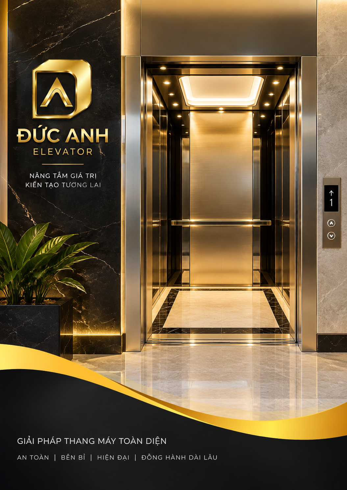

THANG MÁY ĐỨC ANH VIỆT NAM · Mẫu báo giá thang máy
THANG MÁY ĐỨC ANH VIỆT NAM
DUC ANH VIET NAM ELEVATOR LIMITED COMPANY
MST: 0201879133 · Đ/c: HP81, Royal Island, Đảo Vũ Yên,
Phường Thủy Nguyên, TP Hải Phòng
Số:
THANG MÁY ĐỨC ANH VIỆT NAM

BÁO GIÁ THANG MÁY
Số:
CÔNG TRÌNH:
Địa chỉ:
Loại thang:
Hiệu:
Load:
Số lượng:
THANG MÁY ĐỨC ANH VIỆT NAM
BẢNG GIÁ THANG MÁY
BẢNG GIÁ THANG MÁY
Điều 1.1: GIÁ THÀNH SẢN PHẨM PHẦN THANG MÁY
Nội dung
Máy kéo
Xuất sứ
Trọng tải (Kg)
Điểm dừng (Stops)
Tốc độ (m/p)
Công suất
Cáp kéo
Tủ điện
Đơn Giá
Thành Tiền
Điều 1.2: KHUNG THÉP CHỊU LỰC HỐ THANG MÁY (II)
NỘI DUNG
ĐƠN GIÁ
THÀNH TIỀN
Tổng tiền I + II:
(Ba trăm bẩy mươi triệu đồng chẵn)
Giá trên đã bao gồm:
giá vật tư, thiết bị thang máy tại chân công trình,
bảo hành thiết bị miễn phí 12tháng
(Thời gian bảo hành hàng tháng Công ty cử kỹ sư xuống
kiểm tra An toàn và vệ sinh thiết bị thang máy cho tới khi
hết thời gian bảo hành).
Đơn giá đã bao gồm:
Thuế VAT 8%
(Chưa bao gồm Aptomat 40A, đường dây điện 3 pha lên đỉnh
giếng thang, tiếp địa lên đỉnh giếng thang
(Chủ nhà cung cấp chưa gồm trong báo giá)
- Cọc đồng độ dày tối thiểu 14mm, dài tối thiểu 2m.
- Dây dẫn đồng độ dày tối thiểu 6mm.
- Chôn cọc đồng cách xa tiếp địa chống sét của toà nhà.
- Sử dụng tối thiểu 2 cọc đồng, chôn cách nhau tối thiểu
50cm điện trở tối đa là 4 ôm.
THANG MÁY ĐỨC ANH VIỆT NAM
BÁO GIÁ THANG MÁY
Điều 2: Hiệu lực báo giá
- Báo giá này có hiệu lực trong thời hạn 30 ngày kể từ ngày ký báo giá.
- Quá thời gian trên giá chào hàng trong bản báo giá này có thể được điều chỉnh từ phía bên Bán.
Điều 3: Phạm vi cung cấp và lắp đặt thang máy của Công ty TNHH Thang máy Đức Anh Việt Nam
- Khảo sát và thiết kế bản vẽ mặt bằng hố thang.
- Nhập khẩu, chế tạo, cung cấp thiết bị thang máy theo các thông số kỹ thuật trong phần phụ lục đính kèm.
- Nhận hàng và vận chuyển thiết bị thang máy đến chân công trình.
- Lắp đặt thang máy, hiệu chỉnh đưa thang máy vào sử dụng.
- Trực sửa chữa, bảo trì và bảo hành thiết bị trong thời hạn 12 tháng kể từ ngày hai bên ký biên bản nghiệm thu bàn giao thang máy hoặc 18 tháng kể từ ngày hàng về đến chân công trình
Điều 4: Bảo Hành và Bảo Trì
- Bên B có trách nhiệm
bảo hành thiết bị trong thời hạn mười hai (12) tháng hoặc mười năm (15) tháng kể từ khi giao hàng đến chân công trình. Bảo hành máy kéo 5 năm.
- Bên B có trách nhiệm
bảo trì miễn phí thang máy trong thời hạn mười hai (12) tháng kể từ ngày nghiệm thu và bàn giao thang máy.(Một tháng 1 lần)
- Kể từ ngày hai bên ký Biên bản nghiệm thu hoàn thành hạng mục công trình để đưa vào sử dụng. Nếu trong thời gian bảo hành mà thang máy bị hư hỏng, nhận được thông báo của bên A trong thời gian sớm nhất bên B phải cử người đến xử lý và chịu mọi phí tổn sửa chữa nếu xảy ra sự cố kỹ thuật do lỗi của nhà sản xuất hoặc do lỗi khác của bên B.
Nội dung bảo trì:
I. Quy Trình Bảo Trì Thang Máy – Công Ty Cổ Phần Grova Holdings
Bước 1: Kiểm tra và vệ sinh buồng thang máy
Kỹ thuật tiến hành kiểm tra điện áp nguồn và các thiết bị đóng ngắt điện nguồn xem có an toàn không.
Kiểm tra tủ điều khiển xem các thiết bị aptomat, rơ le, quạt,.. có bị hỏng hóc gì không.
Siết chặt lại các vít kẹp đầu dây điện với các đầu đấu, thiết bị điện.
Kiểm tra bộ cứu hộ xem chế độ nạp điện còn hoạt động tốt không.
Kiểm tra má phanh trái của động cơ có bị mòn không.
THANG MÁY ĐỨC ANH VIỆT NAM
NỘI DUNG BẢO TRÌ
Kiểm tra mức dầu, chất lượng dầu trong hộp giảm tốc của thang máy có đủ không. Nếu không đủ phải đổ thêm vào
Kiểm tra độ kín khít của các cổ trục và tình trạng của cáp thép, puly.
Kiểm tra bộ hạn chế tốc độ, lẫy cơ và công tắc điện xem có sự cố hỏng hóc nào không.
Kiểm tra độ ẩm, nhiệt độ và mức độ thông thoáng của buồng thang máy xem chuẩn không.
Kiểm tra các ổ cắm, công tắc, đèn chiếu sáng của thang máy.
Kiểm tra cửa ra vào và khóa cửa có chắc chắn không.
Bước 2: Kiểm tra giếng thang và phía bên trên cabin
Kiểm tra sự liên kết giữa công tắc với giá đỡ, giá đỡ ray.
Kiểm tra các bu lông ở chỗ nối ray có bị lỏng không và siết chặt lại.
Kiểm tra đầu treo cabin, đầu treo cáp đối trọng và ê cu khóa cáp có bị vấn đề gì không.
Kiểm tra độ căng của cáp thép xem đều không.
Kiểm tra liên kết giữa các bộ phận dừng tầng và gá; gá và ray có hoạt động chuẩn xác không.
Kiểm tra lượng dầu trong hộp cabin, hộp ray có đủ không. Chú ý xem nó có bị đóng cặn không để thay kịp thời.
Kiểm tra guốc trượt trên của cabin và đối trọng xem có bị hư hỏng gì không.
Kiểm tra các đệm cao su chống rung lắc cabin có bị hỏng không thì tiến hành thay thế ngay để đảm bảo an toàn cho người sử dụng.
Kiểm tra các công tắc hạn chế hành trình trên của thang máy còn hoạt động tốt không.
Kiểm tra quạt thông gió đặt trên nóc cabin, đèn chiếu sáng dọc giếng thang còn hoạt động không, nếu không hoạt động thì phải thay thế ngay.
Kiểm tra cáp treo quả đối trọng, khóa cửa tầng ở từng tầng xem hoạt động tốt không.
Kiểm tra khe hở của tầng và độ thẳng đứng của các cửa tầng, tiếp điện của các cửa tầng và cáp điện dọc giếng thang có gọn gàng không.
Bước 3: Kiểm tra đáy giếng thang và phía bên dưới cabin
Tiến hành xem xét các công tắc hạn chế hành trình dưới.
Kiểm tra liên kết giữa công tắc và giá đỡ, giữa giá đỡ với ray.
Kiểm tra xem má phanh trái, má phanh phải ở dưới cabin có bị mòn không, có hoạt động tốt không.
Kiểm tra và điều chỉnh khe hở của má phanh khi không làm việc.
Kiểm tra guốc trượt dưới của cabin, đối trọng xem có hoạt động tốt không.
Kiểm tra chỗ treo và chỗ cố định cáp dẹt.
Xem kỹ công tắc bộ giảm chấn có bị lỏng ốc vít không thì siết chặt lại.
Kiểm tra công tắc và bộ gá công tác quá tải đồng thời siết lại các vít.
Kiểm tra công tắc và bộ căng cáp hạn chế hành trình, siết lại các ốc sao cho chặt.
Kiểm tra công tắc, ổ cắm và đèn ở đáy giếng thang.
Tiến hành vệ sinh hộp chứa dầu thừa ở bên dưới giếng thang và dọn dẹp khu vực đáy giếng thang sao cho sạch sẽ, khô giáo.
Bước 4: Bảo trì bên trong cabin
Kiểm tra đèn chiếu sáng, điện thoại nội bộ, chuông cứu hộ có hoạt động tốt không.
THANG MÁY ĐỨC ANH VIỆT NAM
NỘI DUNG BẢO TRÌ
Kiểm tra bảng điều khiển bên trong cabin có hoạt động tốt không.
Kiểm tra rãnh dẫn hướng và sensor an toàn của cửa cabin.
Bước 5: Bảo trì, bảo dưỡng ngoài cửa tầng
Kiểm tra bảng điều khiển ở từng tầng xem có hoạt động tốt không.
Kiểm tra ray dẫn hướng ở từng tầng.
Kiểm tra khóa cửa tầng và khe hở cửa tầng.
Chạy thử thang máy để kiểm tra xem có sự cố nào xảy ra không.
II. Các công việc bảo trì bảo dưỡng thang máy cần thực hiện định kỳ
Những công việc bảo trì hằng tháng
Đối với thang máy có phòng máy thì cần phải khóa cửa chính và cửa sổ, kiểm tra đèn; kiểm tra xem phòng máy có bị thấm nước hay không.
Kiểm tra các thiết bị trong phòng máy như máy kéo, động cơ, dầu máy kéo, phanh điện từ, tủ điều khiển có bị lỗi hư hỏng nào không.
Kiểm tra xem trong buồng thang các thiết bị như; cửa, thanh safety shoes, các thiết bị khác có hoạt động tốt không.
Kiểm tra bảng điều khiển, hộp hiển thị báo cá tầng và báo chiều thang máy có còn hoạt động tốt không. Xem các vít định vị có chắc chắn không, các đèn báo có sáng không.
Kiểm tra đèn và các bulong bắt vách buồng thang máy có sáng và chắc chắn không.
Kiểm tra đèn E.Light có hoạt động không, độ sáng của bóng đèn có đủ không.
Kiểm tra điện thoại nội bộ có hoạt động không, có bị rè hay nhiễu không.
Kiểm tra cửa tầng có hoạt động không. Xem các nút tầng, đèn báo tầng, báo chiều có hoạt động không. Đồng thời vệ sinh bụi đất và cát bám trên sill ở cửa tầng.
Kiểm tra lau chùi các đèn báo ở bảng quan sát.
Kiểm tra đèn dọc hố thang, hộp đứng đầu xem cao hoạt động tốt không và vệ sinh sạch sẽ hố thang xem nó có bị thấm nước không.
Kiểm tra nóc buồng thang xem có bụi bẩn gì không thì vệ sinh và đổ thêm dầu bôi trơn rail.
Kiểm tra hệ thống door lock có hoạt động tốt không.
Kiểm tra các hộp giới hạn tốc độ xem có chính xác không.
Các công việc bảo trì sau 6 tháng
Kiểm tra tủ điều khiển và các tủ phụ xem các thiết bị bên trong có còn hoạt động tốt không.
Kiểm tra phanh điện tử có hoạt động tốt không bằng cách vệ sinh, lau dầu mỡ bôi trơn cho các trục, cốt phanh. Kiểm tra lực hút phanh có đạt hiệu quả không và kiểm tra các dây nối.
Kiểm tra các tiếp điểm, búa văng, poulie rồi dùng máy bơm mỡ khí nén tra mỡ bôi trơn cho những điểm cần thiết trong bộ governor.
Kiểm tra các thiết bị của cửa cabin như bánh xe treo cửa, bánh xe cable, các đầu nối cable và rail cửa xem có hoạt động tốt không. Kiểm tra hộp gate, cam đè hộp gate, bánh xe hộp gate, kiếm cửa, poulie và dây curoa cửa để đảm bảo cửa thang máy hoạt động tốt.
THANG MÁY ĐỨC ANH VIỆT NAM
NỘI DUNG BẢO TRÌ
Các công việc bảo dưỡng cần làm sau 12 tháng
Vệ sinh toàn bộ thang máy.
Kiểm tra các khớp nối, bạc đạn, poulie, hộp đấu dây, chặn cable của máy kéo xem còn hoạt động tốt không. Kiểm tra xem máy kéo có bị rò rỉ dầu không; động cơ có tiếng ồn bất thường gì không.
Kiểm tra dây dẫn điện, đệm đàn hồi, nắp hộp bảo vệ của bộ encoder. Xem kỹ tiếng ồn khi hoạt động của nó.
Kiểm tra khoảng cách của kiếm cửa và bánh xe Door lock; khoảng cách giữa kiếm và sill cửa tầng; các phần nhô ra khác của cửa tầng xem đủ an toàn không.
Kiểm tra kỹ các bộ phận của phanh điện tử và má phanh xem có hư hỏng gì không.
Kiểm tra thanh Safety Shoes có di chuyển tốt không, có phát ra tiếng động lạ nào không. Kiểm tra các ốc vít định vị và tra mỡ bôi trơn vào các vòng bi, ổ trục truyền động và các đầu nối.
Kiểm tra các miếng cao su chặn giới hạn ở cửa tầng có bị mòn, bị hỏng không thì cần phải thay ngay.
Kiểm tra xem photocell và cảm biến cửa có nhạy không.
Kiểm tra các móng ngựa có nhạy không.
Kiểm tra xem shoes cabin và đối trọng có tiếng kêu gì không. Có bị mòn ở mặt tiếp xúc với rail và vệ sinh sạch sẽ, bôi trơn dầu mỡ.
Kiểm tra xem cable tải có độ căng đều không, có bị rỉ sét hay mòn không.
Kiểm tra máng điện và hộp nối dây xem có bị hư hỏng gì không và tiến hành sửa chữa ngay.
Kiểm tra công tắc cabin, công tắc chạy tay xem có bị trục trặc gì không.
Kiểm tra các công tắc ở hố thang; các thiết bị trên đầu và dưới đáy cabin xem còn hoạt tốt không.
Kiểm tra bộ phận phanh an toàn xem có hoạt động tốt không.
Kiểm tra các hộp dầu bôi trơn, hộp giới hạn, quạt thông gió có còn tốt không.
Kiểm tra định vị 2 đầu và ở giữa của dây travelling cable xem có chắc chắn không. Ngoài ra còn kiểm tra độ chai cứng của vỏ cable, độ võng của đáy thang và các đầu nối.